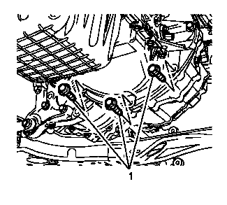
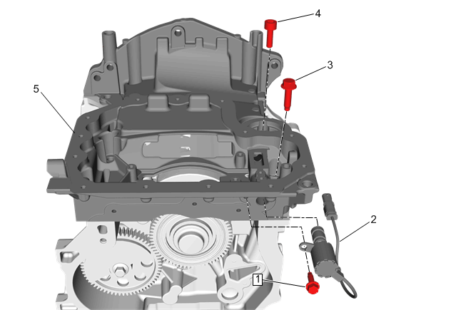
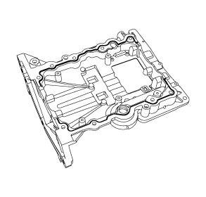
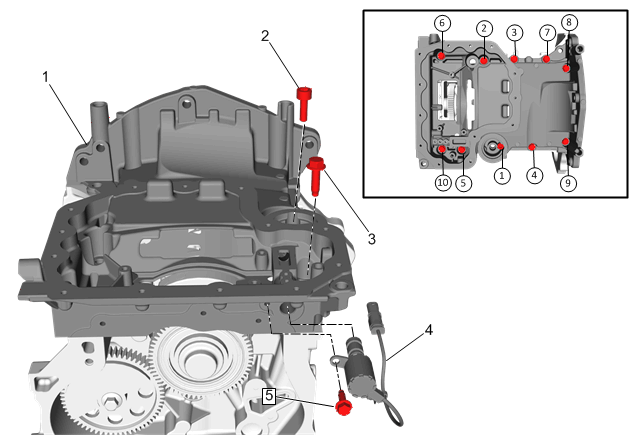

上油底壳的更换（LI6）
拆卸程序
- 1.排空发动机机油并拆下机油滤清器。发动机机油和机油滤清器的更换、发动机机油和机油滤清器的更换（LI6）
- 2.前排气管的更换、前排气管的更换»拆卸
- 3.下油底壳的更换、下油底壳的更换»拆下
- 4.空调压缩机的更换、空调压缩机的更换»拆下
- 5.曲轴后油封的更换、曲轴后油封的更换（LI6）»拆下
-
6.拆下油底壳至变速器的三颗紧固件 (1)。
-
7.拆下油底壳至发动机前盖的三颗紧固件 (1)。

-
8.断开机油流量控制电磁阀连接器 (2)。
- 9.拆除9颗上油底壳螺栓（3）。
- 10.拆除上油底壳紧固件（4），移除上油底壳（5）。
- 11.有关零件转移、清洁与检查，请参见油底壳的清洁与检查、油底壳的清洁与检查（LI6）。
安装程序
-
1.确保室温硬化密封剂(RTV)的正确使用。参见室温硬化密封胶（RTV）和厌氧密封胶的使用。
-
注意:
- • 在涂胶之前，缸体与油底壳配合面不可有污染物。
- • 在涂密封胶后的8分钟内，100%拧紧所用螺栓。
- • 在涂密封胶后的8分钟内无法100%拧紧所用螺栓，可先将所有螺栓预拧紧到1牛米以上，然后1小时内100%拧紧所用螺栓。
- 2.绕油底壳涂上1.75毫米厚的密封胶胶条。参见粘合剂、油液、润滑剂和密封胶。
- 3.将上油底壳安装到缸体上，确保油底壳定位销对准缸体。
-
告诫：参见 有关紧固件的告诫。4.按图示顺序将上油底壳紧固件（2）紧固至25 N•m (18 lb ft)。注意:检查机油滤清器安装区域周围是否有过多的密封胶。如果存在过多的密封胶，则相应清除并清洁。
- 5.按图示顺序将油底壳紧固件（3）紧固至25 N•m (18 lb ft)。
- 6.连接机油流量控制电磁阀连接器 (4)。
-
7.安装油底壳至发动机前盖的紧固件 (1)并紧固至10N•m(89 lb in)。
-
8.安装油底壳至变速器的三颗紧固件 (1)并紧固至58(43 lb ft)。
- 9.曲轴后油封的更换、曲轴后油封的更换（LI6）»安装
- 10.空调压缩机的更换、空调压缩机的更换»安装
- 11.下油底壳的更换、下油底壳的更换»安装
- 12.前排气管的更换、前排气管的更换»安装
- 13.加注发动机机油，并安装新的机油滤清器。发动机机油和机油滤清器的更换、发动机机油和机油滤清器的更换（LI6）